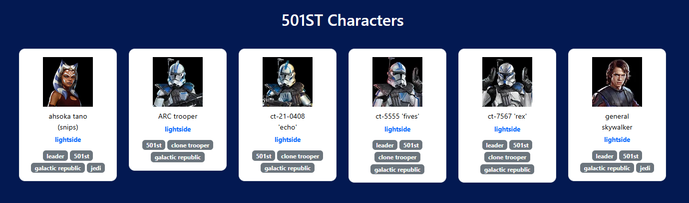

Projet SWGOH Wiki
Description
Ce site est conçu comme un wiki interactif dédié au jeu Star Wars: Galaxy of
Heroes. Il centralise les informations sur les personnages et les
vaisseaux du jeu en présentant pour chaque unité son kit de capacités
(attaques, bonus, effets spéciaux, etc.).
L'objectif est d'offrir une ressource claire et structurée permettant aux joueurs de consulter
facilement les détails de chaque unité.
L'interface a été pensée pour proposer une navigation fluide grâce à un système de
catégorisation : les unités sont regroupées par faction (Jedi, Empire,
Rebelles, etc.) ou par rôle (Tank, Attaquant, Soutien), ce qui facilite la recherche et
la stratégie en jeu.
Langages utilisés
-
 HTML : utilisé pour structurer le contenu du site, définir les titres, paragraphes,
images, et liens.
HTML : utilisé pour structurer le contenu du site, définir les titres, paragraphes,
images, et liens.
-
 CSS : permet de styliser l’interface (couleurs, polices, mises en page) pour une
meilleure expérience visuelle.
CSS : permet de styliser l’interface (couleurs, polices, mises en page) pour une
meilleure expérience visuelle.
-
 JavaScript : permet l'ajoute de fonctionnalités interactives, comme les
filtres dynamiques, les événements au clic, ou une navigation dynamique.
JavaScript : permet l'ajoute de fonctionnalités interactives, comme les
filtres dynamiques, les événements au clic, ou une navigation dynamique.
Fonctionnalités
Le site propose plusieurs fonctionnalités pensées pour les joueurs souhaitant optimiser leur stratégie :
- üîç Recherche rapide d'une unit√© par nom, tag ou faction
- üìã Affichage d√©taill√© du kit de chaque personnage (capacit√©s, effets, cooldowns, etc.)
- üìÇ Classement dynamique par tags (Tank, Healer, Attaquant, etc.)
- üß© Filtres combin√©s pour affiner la s√©lection (ex : Jedi + Soutien)
Page d'accueil

Cette page d'accueil permet à l'utilisateur de se rendre sur les principales pages du site que voici :
- üßçCharacter, page qui d√©finit l'ensemble des tags et factions pouvant s'appliquer √† chaque personnage du jeu et qui permet de naviguer entre les diff√©rents personnage
- üöÄ Ship, page qui d√©finit l'ensemble des tags et factions pouvant s'appliquer √† chaque vaisseau du jeu et qui permet de naviguer entre les diff√©rents vaisseau
- üîç Info player, lien vers mon deuxi√®me projet, toujours li√©s √† Star Wars les H√©ros de la Galaxie et qui permet d'obtenir les infos d'un joueur en fonction de son code alli√©
Classement des personnages
Les personnages sont classés automatiquement selon leurs factions (Empire, République,
etc.) et leurs tags (Tank, Soutien, Leader, etc.).
Cela permet aux joueurs de :
- - Voir rapidement quelles unités partagent des synergies spécifiques
- - Construire des équipes efficaces autour d’un leader ou d’un archétype
- - Préparer les événements ou raids nécessitant certaines factions précises
Tableau présentant les différentes factions et rôles présents :
Page présentant les personnages appartenant à la faction 501E :
Page de présentation d'un personnage :


Pour chaque page de présentation d'unités (personnage ou vaisseau), on a les éléments suivants :
-Une image de profil pour représenter l'unité en lien avec la Page
-Le nom de l'unité
-La description de l'unité en jeux
-Les différents tags et factions auquels appartient l'unité
-Une image générale de l'unité
-les différentes capacités de chaque unité, avec l'image de l'attaque et/ou capacités et sa
description (basée sur le niveau max de la capacité.)
De plus, pour chacune des unités, une fonction de traduction est présente qui permet de passer du
texte en anglais et en français.
Fonctionnement et exemple de la fonction traduction
Exemple de code de la fonction traduction pour la page Ahsoka-tano.html
üåê Objectif de la fonction :
La fonction de traduction a pour but de permettre à l'utilisateur de changer dynamiquement la langue
du contenu affiché sur la page web, sans avoir à la recharger. Elle s'appuie sur un système simple
basé sur des identifiants HTML et un dictionnaire de traductions prédéfini.
üì¶ Organisation des donn√©es
Les traductions sont regroupées dans une structure de type dictionnaire. Ce dictionnaire contient
deux ensembles principaux : un pour le français et un pour l’anglais.
Chacun de ces ensembles regroupe des paires : une clé (comme "title" ou "description") et une valeur
(le texte traduit dans la langue concernée).
La clé correspond à l’identifiant (id) d’un élément sur la page HTML, tandis que la valeur est le
texte qui devra s’afficher à cet endroit.
üîÅ M√©canisme de traduction
Lorsqu’un utilisateur souhaite changer la langue (par exemple en cliquant sur un drapeau), une
fonction est déclenchée.
Cette fonction effectue les opérations suivantes :
-Elle identifie la langue choisie (français ou anglais).
-Elle parcourt toutes les paires de traductions de cette langue.
-Pour chaque paire, elle cherche l’élément HTML correspondant à l’identifiant fourni.
-Si l’élément est trouvé, elle remplace le contenu affiché par le texte traduit associé.
En procédant ainsi, tous les éléments définis dans le dictionnaire de traduction sont mis à jour en
une seule fois, sans rafraîchir la page.
üñ±Ô∏è Interaction avec l‚Äôutilisateur
Sur la page, deux icônes représentant des drapeaux sont affichées : un pour le français et un pour
l’anglais.
Chacun de ces drapeaux est lié à une action qui déclenche la fonction de traduction avec la langue
correspondante.
Lorsqu’on clique sur un drapeau :
La fonction est appelée.
Tous les textes de la page sont immédiatement traduits dans la langue sélectionnée.
Cela offre une expérience utilisateur fluide et instantanée.
üöÄ Comportement au chargement
Dès que la page est chargée, la fonction de traduction est appelée automatiquement avec la langue
anglaise. Cela signifie que, par défaut, la page s’affiche en anglais, sauf si une autre langue est
choisie manuellement ensuite.